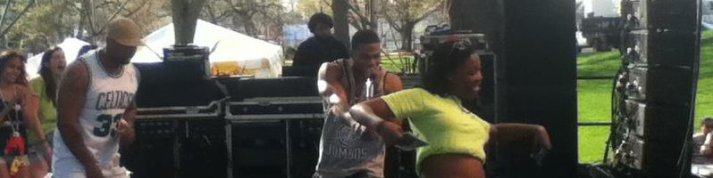
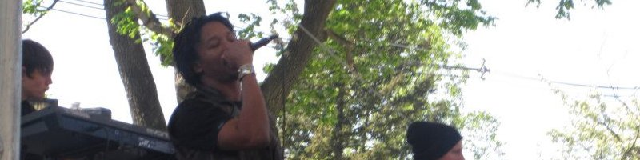

Concert Production
With a passion in music and an interest in leadership positions it was only a matter of time before I joined Tufts Concert Board. I started as a member and quickly rose to production assistant and then finally became one of two co-chairs in the organization. I've helped in and led production of some of Tufts' largest shows.
-
Nelly featuring Yeasayer and 5 & A Dime (Spring 2013)
 -
Cold War Kids featuring Guards (Fall 2012)
-
Lupe Fiasco featuring Guster and White Panda (Spring 2012)
 -
Matt and Kim featuring Time Flies (Fall 2011)
-
The Roots featuring RJD2 (Spring 2011)
-
Passion Pit featuring Black Joe Lewis & The Honeybears (Fall 2010)
Music Recording and Production
I've always had an interest in music, and once I got to school Tufts had the perfect program for me in the music engineering minor. Besides the courses in the minor, I also produce my own music and work as a recording engineer for WMFO Medford, the Tufts campus radio station.
-
You Got Me Bad - American Symphony of Seoul
Recorded as a final project for 'Music Recording and Production', this song is easily the most complex complete song I've released, featuring a full brass combo band and a vocalist.
-
On The Sunny Side Of The Street - American Symphony of Seoul
Also recorded for 'Music Recording and Production', this is a stripped down version of the band and showcases a simpler arrangement while retaining high production values.
-
Ramona Was A Waitress - Paul Dempsey
When Paul Dempsey (lead singer of Something For Kate) came to Boston he stopped by WMFO to record an on-the-air session and interview. I was fortunate enough to engineer his session, and this is a mix of one of his more popular songs.